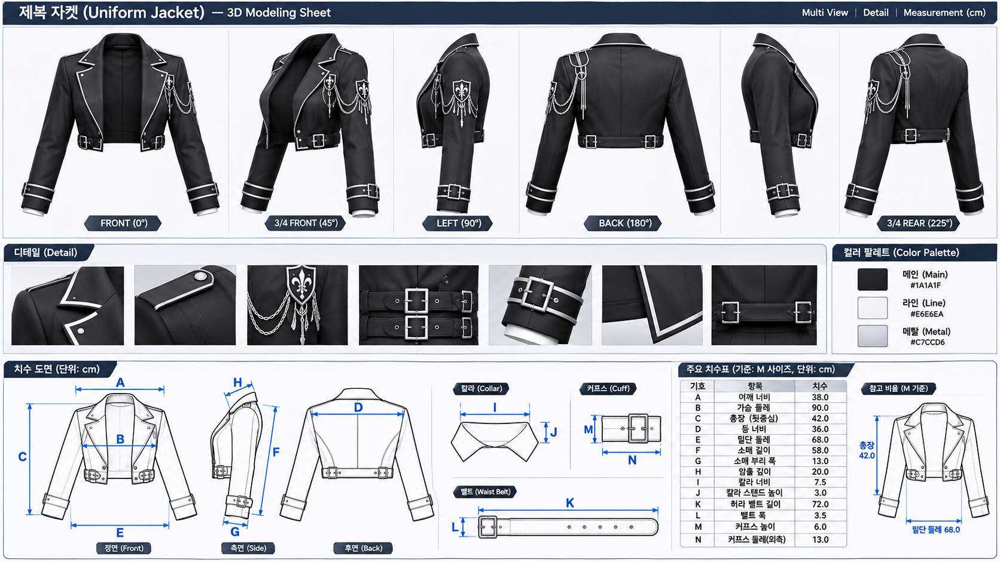
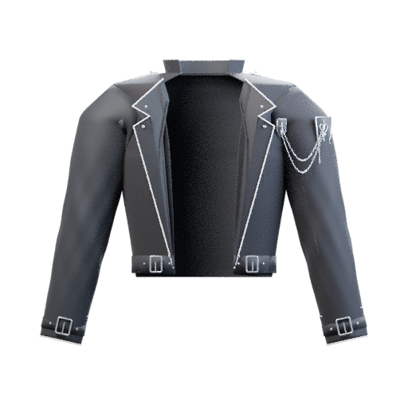
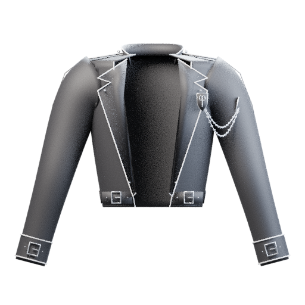
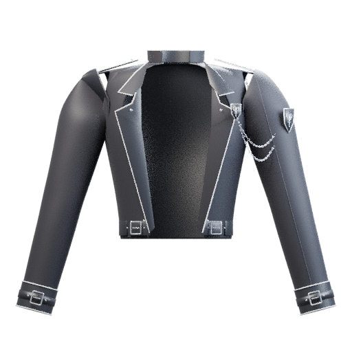
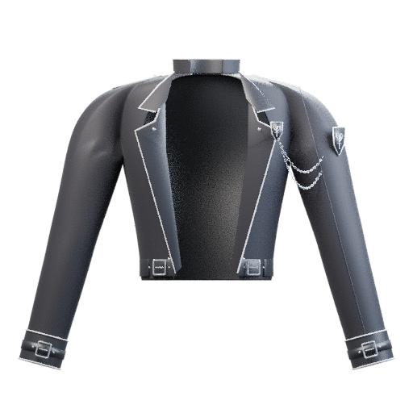

RefAs · Uniform jacket pilot
Three original attempts.
One separate shoulder repair.
The anonymous review preferred plain Blender as the starting point for further development. The original v2 candidate had the clearest shoulder separation. No candidate was accepted as a faithful finished jacket.
The original design reference
The complete user-supplied sheet, shown without cropping or repainting. Its view labels guide qualitative inspection; they are not calibrated cameras.

d8b85deb544c5800. Front, back and labelled-left views determine the wearer-left ornament side.Original trial · blind labels revealed
The same view, across all three conditions
All corresponding cameras, lights and render settings match. Choose a view to update every candidate and the follow-up below. Click an image to inspect its original PNG.
Plain Blender


Preferred development prototype
Most convincing overall torso-to-sleeve continuity and readable ornament. Pinched armholes, compact proportions and the folded collar remain unresolved.
RefAs 1.x


Usable, unfinished prototype
Useful cropped silhouette and some neck-edge flare. Rear armhole continuity, the sleeve shield, cuff layering and rigid tailoring need further work.
RefAs 2.0 production


Major shoulder reconstruction required
The large shoulder gaps dominate whole-garment quality. Cuffs and ornament provide useful blocking, but rigid collar/lapels and smooth sleeves remain.
Qualitative blind preference: B → C → A. This is a development-starting-point preference, not a topology, editability or production-readiness ranking. No numerical likeness scores or statistical superiority are claimed.
Observer correction: the first common renders omitted native curves and were rejected. These images use the authoritative common-final observations: 44 plain curves, 76 legacy curves and 0 v2 curves were realized in separate copies, with all original candidate hashes unchanged. The intermediate common-complete audit was superseded.
Informed follow-up · excluded from trial
Repairing the v2 shoulder connection
The original candidate and repaired version share the same fixed camera and lighting specification. This additional work took about 363.5 seconds and does not replace the original blind result.
Separate sleeve and body boundaries

Shared seams, with pinching still visible


What the checks support
266 protected objects, every cuff piece, decoration and materials remained unchanged. The original twelve trial artifacts retained their recorded hashes. Lower sleeve cages and original body cage vertices were retained.
What still needs work
Underarm pinching, collar/lapel stiffness, fabric appearance and approximate hardware remain. Unified cloth subdivision increased; sleeves now use vertex groups. No deformation or target-engine validation was performed.
Local edit evidence is separate from visual quality
All conditions changed the wearer-left cuff band from nominal 6 cm to 7 cm along its sleeve axis, aligned the piping and buckle, and retained a restored candidate.
| Condition | Protected objects | Restoration evidence |
|---|---|---|
| Plain Blender | 78 | Recorded geometry, transform and material fingerprints match after reopen/resave. Byte-identical file restoration is not asserted. |
| RefAs 1.x | 104 | Restored native file is byte-identical to the selected candidate; protected-state checks also pass. |
| RefAs 2.0 | 269 | Native restore returns byte-identical candidate bytes and a matching recorded scene fingerprint. |
Different scene decompositions produce different protected-object counts. These counts are not quality scores, and edit isolation does not clear visible garment defects.